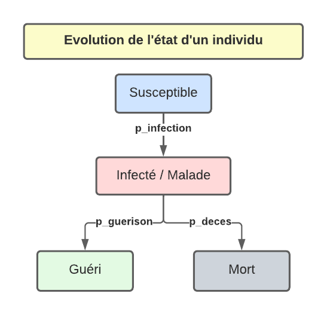

Simulation d’épidémie¶
Dans cette séquence, nous allons simuler l’évolution d’une épidémie grâce à nos connaissances en python. Pour cela, nous allons écrire un modèle représentant les différentes caractéristiques de l’épidémie puis nous simulerons le temps qui passe afin de pouvoir mesurer les impacts de la maladie sur une population fictive.

L’épidémiologie est une science se trouvant à la frontière entre la biologie, les mathématiques, l’informatique et les sciences sociales. Elle consiste à étudier la propagation d’une maladie dans une population donnée.
1. Caractéristiques de la population¶
Disons que nous allons jouer avec une population d’un million de personnes. Vous allez définir les variables susceptibles, malades, gueris et morts qui représentent respectivement le nombre total de personnes susceptibles d’attraper la maladie, le nombre de malades, le nombre de guéris et le nombre de morts.
Définissez les valeurs de ces variables au jour 0 de l’épidémie, c’est à dire le jour où le patient 0 tombe malade.
Dans un second temps, vous allez définir une variable contacts_par_jour qui représente le nombre de contacts que fait chaque individu par jour. Par exemple, si contacts_par_jour vaut 10, cela signifie que chaque personne rencontre en moyenne 10 autres personnes par jour.
2. Caractéristiques de la maladie¶
Nous allons maintenant définir les caractéristiques de la maladie. Pour cela, nous utiliserons les variables suivantes:
nom_maladiequi représente le nom de la maladie.p_infectionqui représente la probabilité qu’un individu malade infecte un individu susceptible lors d’un contact.p_guerisonqui représente la probabilité qu’un individu malade guérisse chaque jour.p_decesqui représente la probabilité qu’un individu malade meure chaque jour.
Voici le diagramme représentant l’évolution d’un individu selon le modèle que nous allons utiliser:
Vous remarquerez que le modèle utilisé pour définir la maladie ici est plutôt simple et ne prend pas en compte de nombreux facteurs.
Dans une épidémie de zombies, il faudrait inclure dans notre modèle le fait que les morts puissent également infecter les vivants.
3. Simulation du jour 1¶
A partir d’ici, vous allez travailler directement sur un fichier python. Vous pouvez le télécharger ici et l’ouvrir sur Thonny. Remplacez les ... par les valeurs que vous avez calculées dans les parties 1 et 2.
3.1 Calcul des infections, guérisons et décès lors du jour 1¶
Nous allons maintenant simuler le jour 1 de l’épidémie. C’est à dire que nous allons calculer le nombre de personnes susceptibles, malades, guéries et mortes à la fin du jour 1. Pour cela, nous allons calculer les variables suivantes:
nb_concacts_du_jourqui représente le nombre total de contacts que font tous les malades au cours du jour. Pour le calcul, vous devrez utiliser les variablesmaladesetcontacts_par_jour.nb_contacts_susceptibles_du_jourqui représente le nombre de contacts que font tous les malades avec des personnes susceptibles au cours du jour. Ce nombre sera donc plus petit quenb_contacts_du_jour. Pour le calcul, multiplieznb_contacts_du_jouravec la proportion de gens susceptibles dans la population (sans compter les morts car on ne rentre pas en contact avec eux).nb_infectionsqui représente le nombre de personnes infectées au cours du jour. Pour le calcul, vous devrez utiliser les variablesnb_contacts_susceptibles_du_jouretp_infection.nb_guerisonsqui représente le nombre de personnes guéries au cours du jour. Pour le calcul, vous devrez utiliser les variablesmaladesetp_guerison.nb_decesqui représente le nombre de personnes qui meurent au cours du jour. Pour le calcul, vous devrez utiliser les variablesmaladesetp_deces.
Lancez votre programme. Est-ce que les valeurs vous semblent cohérentes ? Pour vous en persuader, tentez de mettre des valeurs extrêmes comme par exemple p_infection à 1.0 , p_guerison à 0.0 ou contacts_par_jour à 1000.
3.2 Mise à jour du nombre total de susceptibles, malades, guéris et morts à la fin du jour 1¶
Nous allons maintenant pouvoir mettre à jour nos variables de population à la fin du jour 1. Calculez les nouvelles valeurs de susceptibles, malades, gueris et morts à la fin du jour 1.
Encore une fois, les valeurs obtenues vous semblent-elles logiques ?
4. Simulation sur plusieurs jours¶
Nous allons maintenant simuler l’évolution de l’épidémie sur plusieurs jours. Placer une boucle for jour in range(1, 11): au bon endroit de votre code pour que chaque tour de la boucle corresponde au passage d’un jour (en commençant par le jour 1). Cette boucle permettra donc de faire s’écouler 10 jours.
Combien y a-t-il de malades après 10 jours ? Et après 20 jours ?
5. Visualisation de l’évolution de l’épidémie¶
On souhaite tracer la courbe des nouvelles infections. Pour cela, ajoutez courbe_infection = [] juste avant la boucle for. Cette liste contiendra les nombres d’infections quotidiennes. Pour remplir cette liste, placez l’instruction courbe_infection.append(nb_infections) à la fin de la boucle for (à l’intérieur de la boucle).
Pour visualiser la courbe des nouvelles infections, nous aurons besoin de la librairie matplotlib. Ajoutez l’instruction permettant de l’importer au début de votre programme: import matplotlib.pyplot as plt. (Si vous rencontrez une erreur d’import ici, appelez votre enseignant).
Ajoutez ensuite les instructions suivantes à la fin de votre programme (en dehors de la boucle) pour tracer la courbe des nouvelles infections:
plt.title(f'Epidémie de {nom_maladie}')
plt.plot(courbe_infection,'-')
plt.xlabel('jours')
plt.ylabel("nombre d'infections")
plt.show()
Modifiez le programme pour tracer le graphique du nombre d’infections sur les 50 premiers jours.
Ajoutez à la suite le code suivant qui permet d’afficher l’état de la population après chaque jour:
plt.title(f'Epidémie de {nom_maladie}')
plt.plot(courbe_susceptibles,'-', c='blue')
plt.plot(courbe_malades,'-', c='red')
plt.plot(courbe_gueris,'-', c='green')
plt.plot(courbe_morts,'-', c='black')
plt.xlabel('jours')
plt.ylabel("population")
plt.legend(['susceptibles', 'malades', 'guéris', 'morts'])
plt.show()
Pour que cela fonctionne, il faut au préalable définir et remplir les listes courbe_susceptibles, courbe_malades, courbe_gueris et courbe_morts de manière similaire à ce que vous avez fait pour courbe_infection.
6. Expérimentations¶
Modifiez les paramètres de votre modèle pour voir comment cela impacte l’évolution de l’épidémie. Vous pouvez par exemple:
Modifier le nombre moyen de contacts par jour.
Modifier le taux d’infection.
Modifier le taux de guérison.
Modifier le taux de mortalité.
Modifier l’état initial de la population au jour 0 de l’épidémie.
(7. Pour les plus rapides) Covid-19¶
On souhaite comparer notre modèle à l’épidémie de Covid-19. Le code suivant vous permet de lire le fichier covid.csv et d’obtenir une liste contenant le nombre de cas journaliers en Suisse (source).
Placez le fichier covid.csv dans le même répertoire/dossier que votre fichier python.
import csv
ncas = []
with open("covid.csv") as covid_file:
reader = csv.reader(covid_file, delimiter=';')
entete = next(reader)
for row in reader:
if row[2]== '':
ncas.append(0)
else:
ncas.append(int(row[2]))
# On affiche la vraie courbe
plt.plot(ncas)
plt.show()
Comparez vos courbes avec celles du Covid-19. Quelles sont les différences ? Quelles sont les similitudes ?
Que faudrait-il modifier dans notre modèle pour le rendre plus proche de ce qui s’est passé avec le Covid-19 ? En particulier, comment pourrions-nous simuler plusieurs vagues d’infection ?
(8. Pour les plus rapides) Améliorations de votre modèle¶
Tentez d’améliorer votre modèle pour qu’il soit plus proche de la réalité. Vous pouvez par exemple:
Permettre aux personnes guéries de redevenir susceptibles.
Ajouter des états intermédiaires (par exemple, “hospitalisé”, “en quarantaine”, “asymptomatique”, etc).
Ajouter des paramètres pour simuler des mesures de confinement ou de gestes barrières.
Ajouter des paramètres pour simuler des mesures de vaccination.
Permettre une épidémie de zombies.